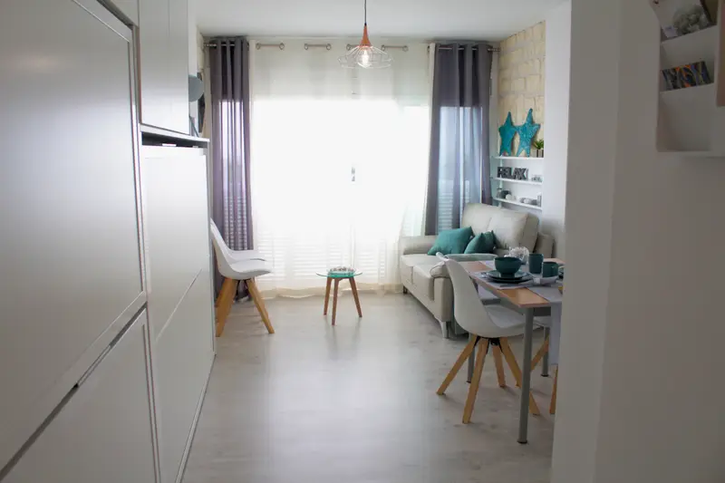

La historia y la esencia de Flor de Vida
Una empresa familiar que transforma propiedades en espacios funcionales, bellos y valiosos.
Nuestra historia
Flor de Vida nace gracias a Roxana Platukis, con la visión de hacer realidad el sueño de tener la casa ideal para cualquier persona. La empresa se funda con un propósito claro: transformar propiedades en espacios funcionales, bellos y valiosos.
Llevamos +6 años en el sector de las reformas e inmobiliaria, trabajando con pasión, compromiso y detalle.

¿Por qué «Flor de Vida»?
El nombre tiene un doble significado. Por un lado, es una expresión común en Uruguay —nuestro país de origen— que representa el mejor momento en la vida de una persona. Por otro, se inspira en el símbolo sagrado de la geometría «La Flor de la Vida», que representa la perfección y la conexión con el universo.
Nuestra misión se alinea con ambos conceptos: crear belleza, funcionalidad y armonía en cada reforma.
+6 años de experiencia
En reformas completas, interiores y detalles de acabado.
Reformas más comunes
Parquet y suelos, puertas, cocinas y pintura general.
Equipo profesional
Colaboramos con un arquitecto y con Karina Platukis, diseñadora de interiores.
Nuestra filosofía
Buscamos satisfacer a cada cliente haciendo realidad su visión de hogar o ayudándole a revalorizar su propiedad con reformas inteligentes y accesibles.
Nos comprometemos a trabajar con limpieza, puntualidad y profesionalismo, cuidando cada detalle como si fuera para nosotros mismos. Creemos firmemente que cada euro invertido en una reforma debe transformarse en bienestar y en valor real para el propietario.
Zona de actuación
Trabajamos desde Roses, cubriendo toda la zona de la Costa Brava: Roses, Empuriabrava, Figueres, Costa Brava. Si estás en esta área, estaremos encantados de ayudarte a transformar tu espacio.
¿Quieres reformar tu casa? Contáctanos